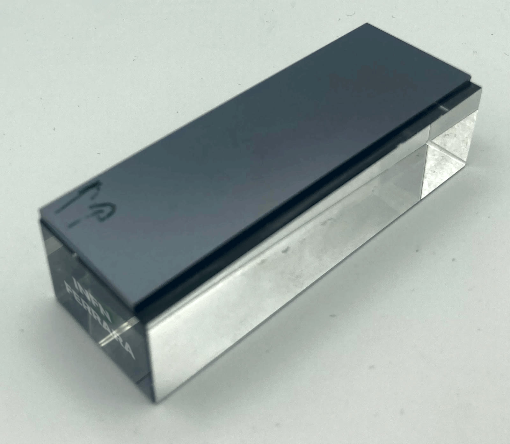
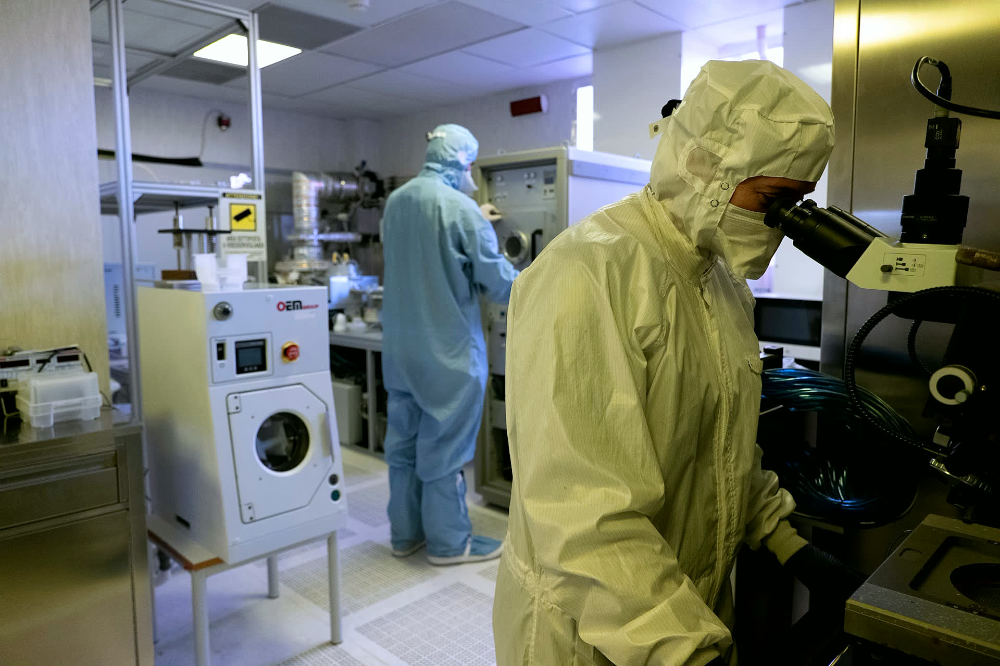
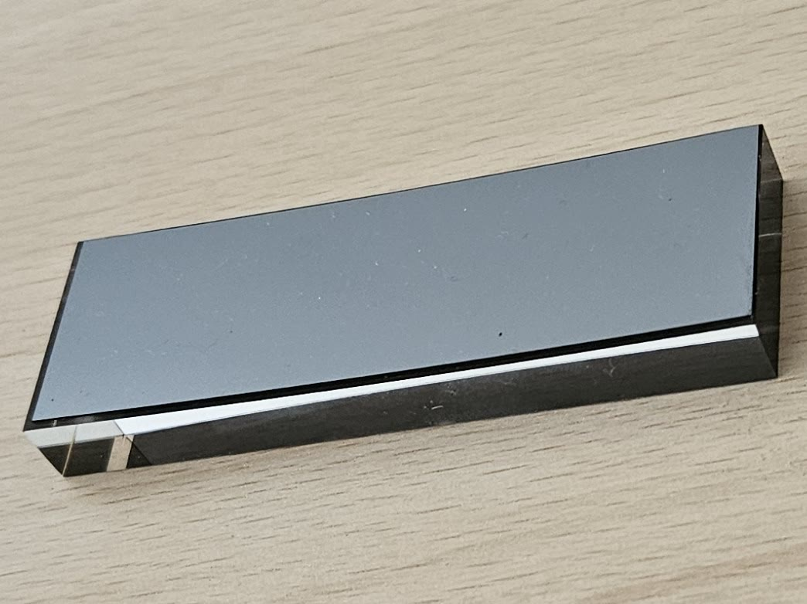
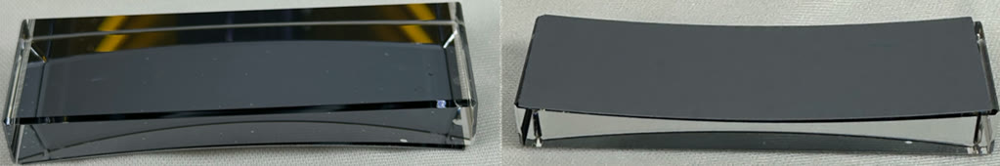
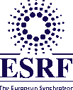
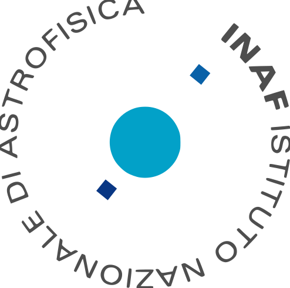

Assembly A1
Bent crystals for the LHC
Silicon crystals bonded to figured substrates, to deflect TeV beams by several milliradians.
Istituto Nazionale di Fisica Nucleare · National Scientific Committee 5
Bonded bent crystals for particle accelerators, synchrotron X-ray optics and γ-ray astronomy
A three-year INFN research project, 2025–2027, carried out by the Ferrara, Legnaro, Trieste and Frascati units and coordinated by INFN Ferrara.

Bent crystals steer charged particle beams by channeling and select or focus X-rays and γ rays by diffraction. Their performance depends on how precisely the crystal is bent and held. Today crystals are bent by mechanical holders or glued, which leaves shape errors and adds bulk.
BOND develops a single technology for all these uses: thin crystals are joined, by anodic and thermo-compression bonding, to substrates figured with optical precision. The crystal takes the shape of the substrate and keeps it. The project will deliver bonded crystals for the Large Hadron Collider, for synchrotron spectroscopy and imaging, and for Laue lenses.
Four bonded crystal assemblies, each designed for a different application.

Assembly A1
Silicon crystals bonded to figured substrates, to deflect TeV beams by several milliradians.

Assembly A2.1
Spherical analysers in quartz, lithium niobate and germanium for high-resolution X-ray spectroscopy.

Assembly A2.2
Cylindrically bent Laue crystals that spread a synchrotron beam by energy, for K-edge imaging.

Assembly A3
Rows of aligned bent tiles that focus hard X-rays and γ rays above 100 keV.
2026
Two silicon (111) crystals, 0.3 mm thick, bonded on glass and aluminium cylinders of 1 m radius and checked by X-ray diffraction, for deflection tests with synchrotron light.

February 2026
The tender for the anodic and thermo-compression bonder was awarded to SUSS MicroTec, after successful demonstrations on curved substrates.

December 2025
Finite-element and analytical models of crystals bonded to glass agree and fix the geometry of the figured substrates.
2025
Quartz crystals bonded on a glass spherical cap of 1 m radius resolved 1.4 eV at the BM20 beamline, comparable to a silicon (111) analyser.
Coordination, crystal shaping, bonding and metrology
Local coordinator: Andrea Mazzolari
FEM design, thin films, interface analysis
Local coordinator: Davide De Salvador
Synchrotron tests and spectral imaging
Local coordinator: Fulvia Arfelli
Crystal design, X-ray optics and tomography
Local coordinator: Sultan Dabagov
With the support of





For samples, tests on beamlines and collaborations, please write to the national coordinator.